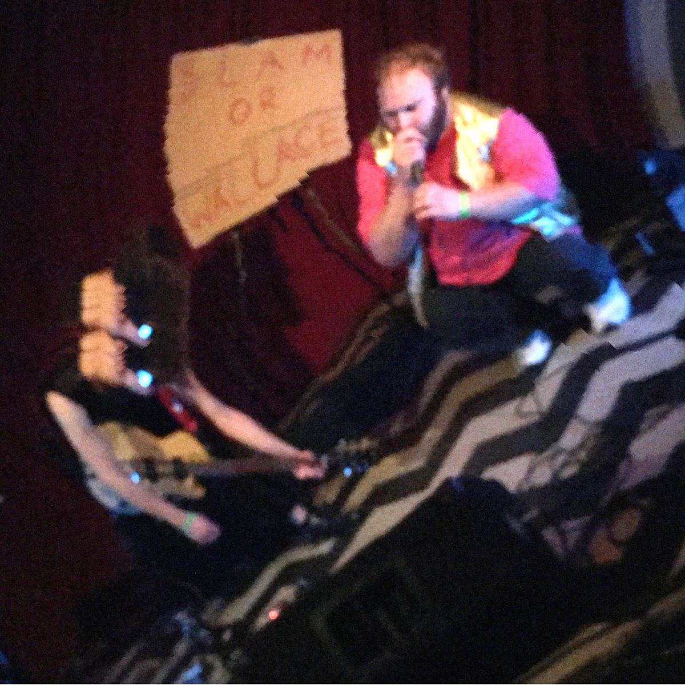

"It's like you found some mysterious weird old tapes in someone's attic, but instead of being from the past, they're from the future" - A different John

Slam & Wallace are a weirdo band comprised of John Sokolis and PK Kim. John does most of the singing, and PK does most of the non-singing. Primarily active from 2015-2018 and known for their heavy lean towards gimmicks, lore, lo-fi recordings, and memorable live shows.
The critics have spoken! Slam & Wallace has been refered to by real human beings as "space funk church", "tenacious d + devo", and bafflingly enough "suicide if they were good"